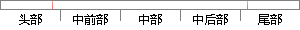

如今不少国际高校的宿舍改革规模较大，系统也越来越成熟。
片段位置图

相似结果|
相似片段 1：的发展、壮大，各种信息化系统也是越来越成熟，随着改革的不断进行，学生宿舍管理也是越来越完善，管理信息化也是越来越受到重视。传统的宿舍管理效率低下，浪费大量的人力、财力，在信息化突飞猛进的当前社会，以计算机为基础，利用各种软件来推动学生宿舍管理的信息化是当今社会的必然要求，也是高校实现信息化的发展趋势。
|
※ 片段修改建议 ※
近似词参考：- 如今：现在
- 不少：很多
- 改革：鼎新 改造 革新
- 规模：范围
- 系统：体系
- 越来越：愈来愈
系统自动生成语句：现在很多国际高校的宿舍鼎新范围较大，体系也愈来愈成熟。
注：本片段修改建议为系统自动生成，仅供参考。